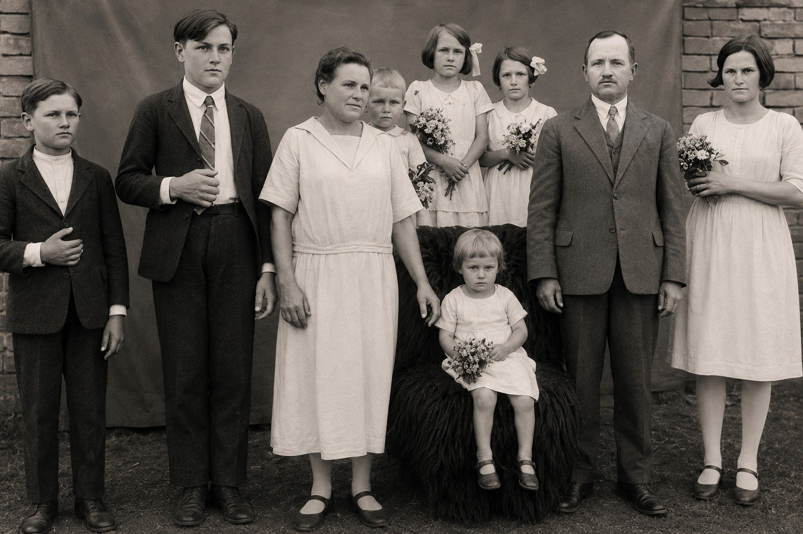
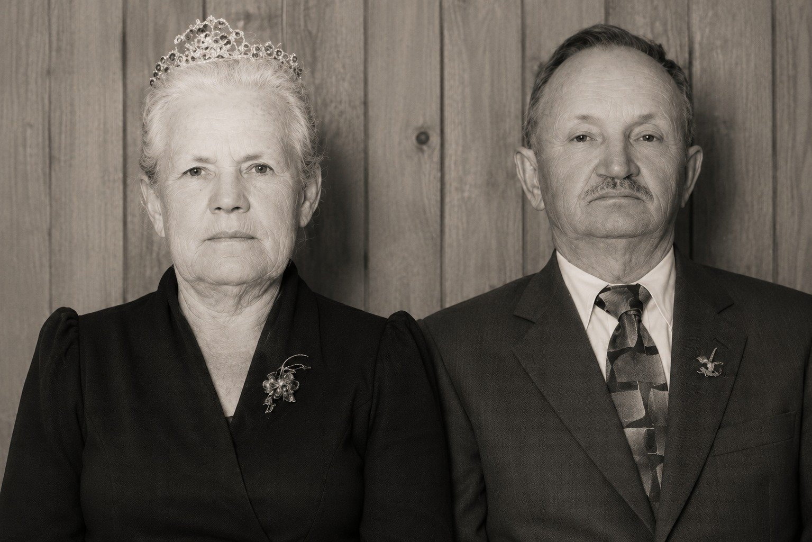

Parte I · Ecos na Serra Catarinense
Capítulo 2 — Duas Palavras num Sotaque Bávaro: Fata, Mota e o Enigma de Heumaden
49,6° N · 12,4° L, Heumaden, Moosbach, Alto Palatinado
Um dado certo no lugar errado estraga o mapa inteiro.
Nove rostos
Uma das crianças desta fotografia é meu pai, e não sei dizer com certeza qual. Ela está sobre a minha mesa de trabalho há anos, primeiro em papel, depois na tela. Antes de dizer quem são as pessoas nela, gostaria de olhar para ela com vocês como se não as conhecêssemos, do jeito que um observador olha para uma carta sinótica antes de tirar conclusões.
São nove pessoas, de pé ao ar livre, diante de um pano escuro estendido como fundo e, à direita, de um pedaço de parede de tijolos sem reboco. O chão é de terra batida. No centro, uma mulher de vestido claro, comprido e simples, de cabelo preso, segura no colo um bebê de rosto redondo. Ela não sorri; olha para a câmera com uma expressão firme e cansada ao mesmo tempo, a expressão de quem tem muito o que fazer e concordou em parar por um minuto. À frente dela, sentada numa cadeira coberta por uma pele ou um pano felpudo, está uma menina pequena de vestido branco, com um ramo de flores no colo e o olhar desconfiado das crianças que não entendem por que precisam ficar quietas. Atrás, duas meninas um pouco maiores, também de branco, uma delas com uma flor presa no cabelo.
À esquerda, dois rapazes de terno escuro, o mais alto de gravata listrada, o outro com a mão no peito, numa pose que algum fotógrafo deve ter sugerido. À direita, uma moça já quase adulta, de vestido claro e cabelo curto, segurando flores. E entre ela e as crianças, um homem de terno, colete e gravata, cabelo bem penteado, bigode aparado, as mãos pendentes ao lado do corpo. É o único que parece à vontade diante da câmera, embora também não sorria.
Ninguém olha para o outro. Todos olham para a frente, para o fotógrafo, para nós.

O homem de bigode é Johann Haas, o Fata. A mulher do centro é Maria Katharina Meier Haas, a Mota. As sete crianças e jovens são os filhos que eles criaram em Santa Catarina: Gertrudes, Fernando, Alexandre, Agnes, Elza, Baldoíno e Maria. Um deles é meu pai. O bebê no colo da mãe deve ser a caçula, Maria, nascida em 1926, o que poria a fotografia por volta de 1927; a criança sentada na frente poderia ser meu pai, com três ou quatro anos, vestido de branco como era costume vestir os meninos pequenos naquele tempo; mas também poderia ser outra pessoa, e não quero transformar um palpite em legenda. Os dois rapazes de terno seriam Fernando e Alexandre, e a moça da direita, Gertrudes, a mais velha. Tudo isso é dedução pela idade aparente. Ainda preciso sentar com os primos e conferir rosto por rosto.
O que sei com certeza é o que falta na fotografia. Faltam Hildegard e Frida, as duas primeiras filhas, que morreram na Alemanha antes da viagem. Faltam Luisa e Walter, que atravessaram o oceano com os pais e morreram pequenos; onde, as fontes da família não concordam, e essa discordância fica para o próximo capítulo. E falta João, que ainda não tinha nascido e que também morreria pequeno. Quando olho para essa foto, procuro também os ausentes.
O Fata
Os netos o chamavam de Fata. Durante a infância, achei que fosse um apelido, uma dessas palavras inventadas que as crianças pequenas usam e que a família adota. Demorei a entender que era simplesmente Vater, pai em alemão, pronunciado do jeito que os filhos o chamavam em casa e ouvido pelos ouvidos brasileiros dos netos. O mesmo com a Mota: Mutter, mãe. No texto que minha irmã Marise escreveria para o centenário da chegada, em 2013, ela usa as duas formas lado a lado, Vater (Fata), Mutter (Mota), como quem traduz e ao mesmo tempo preserva. Os netos herdaram dos filhos a palavra pai e a palavra mãe e as transformaram em nomes próprios. Em nenhuma outra família conheço avós chamados assim, e gosto de pensar que isso diz alguma coisa sobre aquela casa: os filhos falavam tanto com os pais, e com tanta naturalidade, que a palavra comum virou nome.
Johann Haas nasceu na Baviera em julho de 1884. Vinha de uma família de pedreiros e se especializou num ofício que hoje quase desapareceu: o trabalho em gesso. Fazia molduras de janelas, contornos de portais, ornamentos de altares, tudo aquilo que nas igrejas e nas casas mais ricas da Europa daquele tempo dava acabamento à alvenaria bruta. Era um trabalho que exigia mão firme e olho de artista, e que ele traria consigo para um país onde quase ninguém tinha dinheiro para ornamentos.
No Brasil, essa habilidade o salvou mais de uma vez. Nos primeiros anos, numa terra seca e ácida no interior de Anitápolis, onde a lavoura mal dava para comer, foi o gesso que comprou o pão: ele passou a fazer túmulos de granilite para os cemitérios da região, decorados com desenhos e com anjos moldados à mão. Mais tarde, em Ituporanga, foi o ofício de pedreiro que o sustentou, e ele o ensinou aos filhos. A família construiu, na cidade, a Igreja Matriz, a Casa Paroquial, o Seminário Franciscano e a ampliação do Hospital das Irmãs. Construiu também casas, escolas, fornos, fogões, escadarias e serrarias por toda a região, nem sempre pelas mãos dele, mas pelas mãos de quem tinha aprendido com ele.
O que mais aparece nas lembranças, porém, é o temperamento. “Nosso João era brincalhão e divertido: um piadista”, escreveu Marise. Nunca perdia a oportunidade de dizer alguma coisa engraçada. Os netos que conviveram com ele nos últimos anos, em Ribeirão das Pacas, contam que gostavam de sentar perto dele para ouvir histórias, sobretudo depois que ele tinha tomado umas cervejas, quando a língua se soltava e a Alemanha voltava a aparecer nas conversas.
Era também um homem de leitura. É um detalhe que me comove, talvez por deformação profissional. Eram imigrantes pobres, como a maior parte dos que vinham para as colônias, mas, como diz o texto do centenário, cultos. Trouxeram livros da Alemanha, e esses livros foram lidos e relidos na casa da mata. Mais tarde a família assinava jornais, principalmente os que vinham da região de Blumenau, onde a imprensa em língua alemã ainda era forte, para acompanhar as notícias do Brasil e do país distante. Imagino o Fata, à noite, depois de um dia inteiro de obra, lendo à luz de lampião um jornal de Blumenau com uma semana de atraso, procurando alguma notícia da Baviera. Não sei se a cena aconteceu exatamente assim. Sei que algo parecido com ela aconteceu muitas vezes.
E havia mais uma habilidade, que só fui compreender muito depois e que se revelaria uma pista. Segundo o texto do centenário, Johann era chamado com frequência para servir de intérprete, porque dominava vários dialetos alemães. Hoje, quando se pensa em alemão, pensa-se numa língua única, a do rádio e dos livros. Mas a Alemanha em que ele nasceu tinha sido unificada como país havia apenas treze anos, e como língua estava longe disso. Um camponês da Pomerânia e um camponês da Baviera podiam ter dificuldade real de se entender. Nas colônias brasileiras, onde se misturavam imigrantes de todas as regiões, alguém que transitava entre esses falares era precioso. Era também, para quem investiga, um sinal: o Fata tinha um ouvido treinado para sotaques, e o seu próprio sotaque dizia de onde ele vinha.

A Mota
Se o Fata era a voz da casa, a Mota era o chão.
Maria Katharina Meier nasceu em Heumaden, na Baviera, em abril de 1888. De que casa ela vinha, só fui saber muito depois. Antes de partir para o Brasil, além dos trabalhos da casa, ganhava salário ordenhando vacas. Era ela, segundo a tradição da família, quem conhecia a lida do campo, e é provável que tenha sido ela o ponto de apoio prático de toda a aventura: o Fata sabia construir paredes, mas quem sabia fazer a terra produzir, cuidar dos animais e manter uma casa funcionando no meio do mato era a Mota.
Durante os anos em Rio Novo, quando a família morava numa casa pequena levantada no meio da mata, o Fata passava dias e dias na cidade trabalhando como pedreiro. A Mota ficava sozinha com os filhos. Cuidava da roça, dos animais, das crianças, e, nas palavras do texto do centenário, defendia-se como podia, com o olhar sempre na estrada, esperando o marido chegar com os provimentos que a terra não dava. Foi nessa casa que nasceram Agnes, Elza, meu pai e Maria. Penso nela muitas vezes quando ouço falar da coragem dos pioneiros. A coragem de enfrentar o desconhecido costuma ser atribuída a quem parte. Há também a coragem de quem fica, sozinha, numa clareira, com quatro ou cinco crianças pequenas, ouvindo os barulhos da noite.
Ela nunca aprendeu o português. O contato com os falantes da língua era pouco; a vida dela se passava entre a casa, a roça, a família e a igreja, e em todos esses lugares se falava alemão. Quando os netos nasceram, muitos deles já sem saber alemão, abriu-se entre a avó e eles uma distância que nenhuma das partes tinha escolhido. Marise conta que isso prejudicou muito a comunicação, mas não impediu a Mota de tocar o coração dos netos com olhares, gestos firmes e o que ela chama, com carinho, de “resmungões”. Gosto dessa palavra. Imagino uma senhora de cabelo branco resmungando em dialeto bávaro para uma criança que não entende uma palavra e que, mesmo assim, entende tudo.
Nos últimos anos, em Ribeirão das Pacas, a Mota caminhava pela roça apoiada em bengalas feitas de pedaços de pau. Os netos mais próximos, filhos de Agnes e de Maria, que moravam ali perto, a ajudavam a segurá-las. São eles que guardam as lembranças mais vivas dela, e são eles que me fazem falta neste capítulo: preciso ainda ouvir cada um com calma, com gravador, e pedir licença para citar o que disserem. Por enquanto, o que tenho é a síntese que Marise fez de muitas vozes, e uma imagem que se repete em todas elas. A Mota abraçava. “Nunca perdia a oportunidade de abraçar, abraçar, abraçar”, escreveu minha irmã. E tinha olhos azuis, que o texto chama de infinitamente meigos.

Nessa outra fotografia, que a família guarda como a dos primeiros netos, a Mota aparece de vestido escuro, já de cabelos claros, de pé no meio de filhos, genros, noras e netos, sob uma parreira carregada de folhas. É a única que olha para a câmera com algo parecido com um meio sorriso. Ao lado dela, de gravata escura, o Fata. As crianças da frente estão descalças, como as crianças das colônias costumavam andar, e as mães seguram os bebês com aquele jeito de quem tem prática. Não sei o nome de todas as pessoas da foto e não vou arriscar. Sei que é uma fotografia de colheita: vinte e poucos anos depois de chegarem ao Brasil com duas crianças que não chegariam a crescer, os dois estavam ali, rodeados de gente que só existia porque eles tinham ficado.
João Haas morreu em 19 de março de 1969, e Maria em 8 de novembro de 1973, ambos com oitenta e cinco anos. Estão sepultados no cemitério de Aurora, perto de muitos túmulos que ele mesmo fez.
Duas palavras
Durante muito tempo, tudo o que a família sabia sobre a origem exata dos dois cabia em duas palavras.
Do lado da Mota, a palavra era Heumaden. Do lado do Fata, Sandberg, às vezes acompanhada de Leonberg. Eram palavras ditas, mais do que escritas, e mudavam um pouco conforme quem as dizia. Na planilha que meu primo Agenor montou ao longo de anos, e da qual falarei no próximo capítulo, a aldeia da Mota aparece grafada Heimaden, com i, e Johann aparece como nascido “em Leonberg, que hoje se chama Maxhütte, que fica no estado de Bayern”. Era muito mais do que eu tinha. Era também, como eu descobriria, um campo minado.
A diferença entre Heumaden e Heimaden parece pequena, uma vogal, mas diz muito sobre como os nomes viajam. Uma palavra transmitida de boca em boca durante noventa anos, por gente que já não falava a língua de origem, vai se acomodando ao ouvido de quem a repete. Heu é feno, em alemão; o restante do nome lembra Mahd, a ceifa, o corte do capim, e a aldeia, imagino, deve ter nascido de algum prado de feno ceifado no verão para alimentar o gado no inverno. Heim, por outro lado, é lar, casa. Não sei se a troca foi de quem ouviu ou de quem escreveu, nem tenho como saber. Mas não deixo de achar bonito que, ao passar pela memória de três gerações brasileiras, a aldeia do feno tenha ficado parecida com a aldeia de casa.
Os nomes das pessoas sofreram o mesmo desgaste. Meier virou Meyer em muitos papéis brasileiros, e as duas grafias convivem até hoje nos documentos da família. Johann virou João, e Maria Katharina ficou só Maria. Na planilha, o pai da Mota aparece como Adam Meyer e a mãe como Franciska Meyer, com o sobrenome do marido, como era costume registrar as mulheres casadas. Cada uma dessas pequenas mudanças é inocente. Somadas, podem tornar uma pessoa irreconhecível num arquivo do outro lado do mar.
Para um meteorologista, uma estação de observação é um par de coisas: um conjunto de medidas e uma posição. As medidas sozinhas não servem para nada. Uma temperatura de dois graus negativos às seis da manhã é uma informação banal se a estação estiver no alto de uma serra, e é um alarme se estiver numa várzea do litoral. Por isso toda estação tem coordenadas: latitude, longitude, altitude. E por isso um dos erros mais traiçoeiros que se pode cometer na análise de dados é o erro de posicionamento: uma medida correta atribuída ao lugar errado. Ela não parece errada. Os números são plausíveis, o formato é perfeito, nada chama a atenção. Mas, quando entra no mapa, ela contamina tudo ao redor. O programa de análise ajusta as isolinhas para acomodar aquele valor, e o que deveria ser um campo suave ganha uma bolha estranha, um falso núcleo de frio ou de calor, que pode convencer um previsor desatento de que há algo ali onde não há nada.
Os nomes de lugares numa genealogia funcionam como as coordenadas de uma estação. Se estiverem certos, as medidas, as datas, os nomes dos pais, os ofícios, se encaixam num mapa coerente. Se estiverem errados, tudo o que vier depois será construído sobre um ponto deslocado. E nomes de aldeias alemãs são especialmente traiçoeiros, porque se repetem.
O perigo dos homônimos
Basta digitar as duas palavras num mapa da internet para entender o problema.
Leonberg, para qualquer alemão e para a maior parte dos mapas, é uma cidade de Baden-Württemberg, uns quinze quilômetros a oeste de Stuttgart. É uma cidade conhecida, com centro histórico, castelo, uma raça de cães gigantes que leva seu nome e uma autoestrada que passa ao lado. Quem procura “Leonberg, Alemanha” cai lá quase sempre. E Heumaden, por uma coincidência que parece armada de propósito, também existe nos arredores de Stuttgart: é um bairro da própria cidade, na zona de Sillenbuch, a uns vinte quilômetros de Leonberg.
Pensem na tentação. Um pesquisador brasileiro, com duas palavras transmitidas oralmente por quase cem anos, digita os dois nomes e descobre que ambos existem, lado a lado, na mesma região metropolitana do sudoeste da Alemanha. Parece um achado. Parece a confirmação de que a família inteira, Fata e Mota, vinha de uma mesma área, o que explicaria como os dois se conheceram. Os dados são plausíveis, o formato é perfeito, nada chama a atenção. É o erro de posicionamento em estado puro.
Não vou dizer aqui que caí nessa armadilha, porque não tenho registro de ter caído, e não quero inventar um tropeço para tornar a história mais dramática. Mas sei que ela estava armada no caminho, e sei que muitos pesquisadores de família, no Brasil e fora dele, já perderam meses em cidades homônimas, consultando arquivos que nunca guardaram um único papel dos seus antepassados. Os fóruns de genealogia estão cheios dessas histórias. Por isso dedico a ela algumas linhas: para que vocês, se um dia continuarem esta pesquisa, saibam que o primeiro resultado do mapa quase nunca é o certo.
Havia pelo menos três sinais de que a região de Stuttgart não era a resposta. O primeiro estava na própria nota do Agenor: Leonberg, dizia ele, ficava em Bayern, a Baviera, e tinha mudado de nome para Maxhütte. A Leonberg de Stuttgart nunca foi bávara, nem mudou de nome. O segundo era a palavra Sandberg, que não aparecia em nenhum mapa perto de Stuttgart. O terceiro era o sotaque.
Os dialetos falados em torno de Stuttgart são suábios, da família alemânica, aparentados aos falares da Suíça alemã e da Alsácia. Os da Baviera pertencem a outra família, a bávara, aparentada aos falares da Áustria. Para um ouvido brasileiro, é tudo alemão. Para um alemão, é a diferença entre um gaúcho da fronteira e um nordestino do sertão, e às vezes mais. O título deste capítulo fala em sotaque bávaro, e ele adianta uma conclusão que só os documentos confirmariam mais tarde. Mas o raciocínio já estava disponível: se o Fata, que transitava entre dialetos e era chamado justamente para traduzir uns para os outros, fosse de Stuttgart, teria crescido falando suábio, e a família guardaria dele outra música. E a única pista escrita que eu tinha, a nota do Agenor, dizia Bayern com todas as letras.
Quando se procura Leonberg dentro da Baviera, aparece outra coisa. No Alto Palatinado, a Oberpfalz, a região do nordeste bávaro que faz fronteira com a Boêmia, a pouco mais de vinte quilômetros ao norte de Regensburg, existe um município chamado Maxhütte-Haidhof. O nome vem de uma siderúrgica, a Maximilianshütte, fundada no século XIX, em torno da qual cresceu uma cidade operária. Leonberg e Sandberg são localidades que hoje fazem parte desse município. A nota do Agenor estava certa, e a palavra Sandberg se encaixava: era o nome de um lugarejo ligado a Leonberg, ao lado da siderúrgica, e o lugar onde, ao que tudo indicava, a família de Johann tinha vivido.
E Heumaden? Também existe na Oberpfalz. É uma aldeia pequena do município de Moosbach, no distrito de Neustadt an der Waldnaab, a menos de vinte quilômetros da atual fronteira com a República Tcheca, numa região de colinas, florestas e pequenos lugarejos agrícolas. Fica a cerca de cinquenta quilômetros em linha reta de Maxhütte-Haidhof, e a mais de duzentos de Stuttgart. A paróquia que a atende é a de São Pedro e São Paulo, em Moosbach.
Desenhei os dois pontos no mapa como desenharia duas estações. Duas aldeias da mesma região, separadas por uma distância que se fazia a pé em dois dias ou de trem em poucas horas, ambas no Alto Palatinado, ambas no mesmo dialeto. De repente as duas palavras deixavam de ser lendas e passavam a ser coordenadas: Heumaden, cerca de 49,6° de latitude norte e 12,4° de longitude leste; Leonberg, em Maxhütte-Haidhof, cerca de 49,2° norte e 12,1° leste.
Mas havia uma terceira palavra na nota do Agenor que não se encaixava em nada disso. Segundo ele, Johann e Maria tinham se casado em 3 de agosto de 1907 em Eibenstock. Eibenstock, se for a cidade que os mapas mostram, não fica na Baviera. Fica na Saxônia, nos Montes Metálicos, junto à fronteira tcheca, bem mais ao norte. O que um estucador de Leonberg e uma moça de Heumaden estariam fazendo lá? Trabalho, talvez. Uma obra, uma temporada, um parente. Ou talvez seja outro homônimo, outra estação deslocada. Não sei. Deixo o ponto marcado no mapa com um sinal de interrogação, que é o que se faz com um dado suspeito: não se apaga, mas também não se confia nele antes de conferir.
Eu tinha agora duas aldeias reais no lugar de duas palavras, uma data de casamento num lugar intrigante e um punhado de perguntas que nenhuma conversa de família ia responder: onde estariam os registros de nascimento, quem eram os pais de Johann e de Maria, se teriam ficado irmãos na Baviera, se alguém, do outro lado, ainda carregaria o mesmo sobrenome.
Eram perguntas grandes demais para um homem só, com um computador e algumas noites livres por semana. A boa notícia era que eu não estava só. Havia na família, espalhados pelo Brasil, outros curiosos que vinham juntando peças havia anos, cada um com seu pedaço do quebra-cabeça e nenhum com o desenho completo.
Para vocês descobrirem
- Qual das crianças da fotografia dos nove rostos é Baldoíno? Sentem com os primos e confiram rosto por rosto.
- O Eibenstock da nota do Agenor é mesmo a cidade da Saxônia, ou é outro homônimo? E o que um estucador de Leonberg e uma moça de Heumaden estariam fazendo lá?
- A troca de Heumaden por Heimaden foi de quem ouviu ou de quem escreveu?
- O que a Mota dizia nos seus “resmungões”? Perguntem aos netos que moravam perto dela em Ribeirão das Pacas, filhos de Agnes e de Maria.